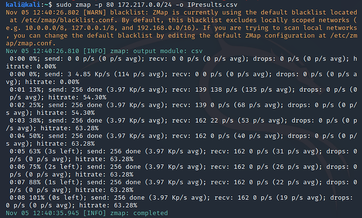
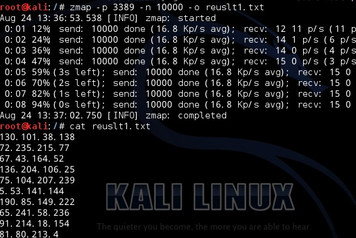

Utilisation dans notre projet de cybersécurité avec Kali Linux
Zmap est un scanner réseau open-source ultra rapide conçu pour scanner des plages d'adresses IP à grande vitesse. Il est utilisé pour collecter des informations comme les ports ouverts sur un large ensemble d'hôtes.
Pour scanner le port 80 sur le réseau local :
Ici, -p 80 spécifie le port à scanner (HTTP), et 192.168.1.0/24 est la plage d’adresses IP ciblée.
-o permet d'enregistrer les résultats dans un fichier texte. Ici, on scanne le port 22 (SSH).
Voici quelques captures d’écran illustrant l'utilisation de Zmap :
 Zmap est un projet open-source maintenu par l’Université du Michigan.